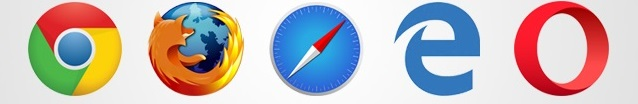

We provide all kinds of web releted review in our site such as: audio review, written review and also video review.
Audio Reviews
Web.com Reviews:
"Web.com offers small, medium, and solopreneur businesses an incredibly easy, coding-free way to get online, market their services, and grow their customer base. Expert designers at Web.com build professional websites based on an introductory call in which they learn more about the unique needs of each business."
Sean Garrity
Video Reviews
Earn $30/hr testing websites [UserTesting Review]
Front-End Development, HTML & CSS, Javascript & jQuery by Jon Duckett | Book Review
Other Reviews
THE BEST WEB BROWSERS REVIEW OF 2019:

1.Firefox-Firefox is one of the best web browser and recently it has its biggest update in 13 years.It is so popular and users had made it at top of the browsers list. In terms of security it is so much reliable and speed is unbelieveable. Firefox Quantum also released this year which supports many extensions and it is rate highly by its users. Read more...
2.Chrome-Chrome is another browser developed by google and it is one of the top ratings browser.The browser is extendable, efficient and much more reliable. Its wide range of features and extension make it one of the best browser with high speed fuctionality and linking apart with google. It can support for parental controls and setting to make maximum efficiency. Read more...
3.Microsoft edge- Microsoft edge is default browser on Windows 10 only, and it is not availale for older Windows. As microsoft upgrade its internet explorer to edge which is 10 times faster than Internet Explorer 9. Not only it can compare with IE but it can compare with Firefox and Chrome. Its feature is unbelievable and it is secure, safe and more user-friendly. Read more...
4.Opera- Opera is also similar to Google Chrome as it uses same kind of base structure and program. Its features is unique as user can pin favourite links in sidebar like bookmarks or any shortcut window. It is also fast and compatible for both mobile and PC devices. User can adjust the whole settings in this browser. Read more...
5.Safari - Safari is designed by Apple for its devices like: Mac, Iphone, Ipad and so on. It is also the one of the best choice of users. It is fast, reliable and secure but user cannot customize this browser. It loads faster than other browsers and it will tag favourite site which the user can loads the same contents faster. Read more...